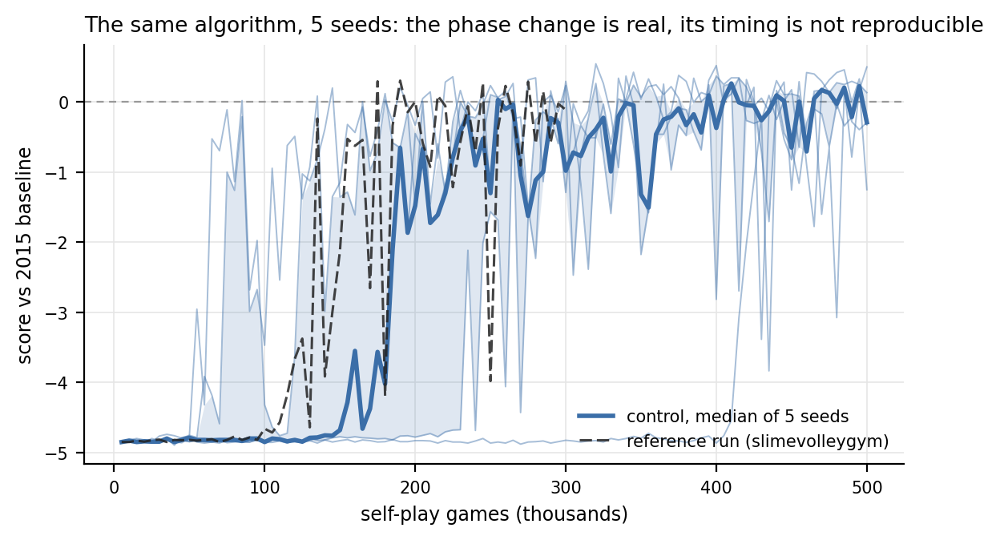
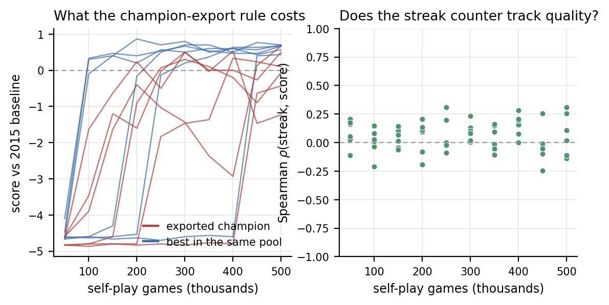
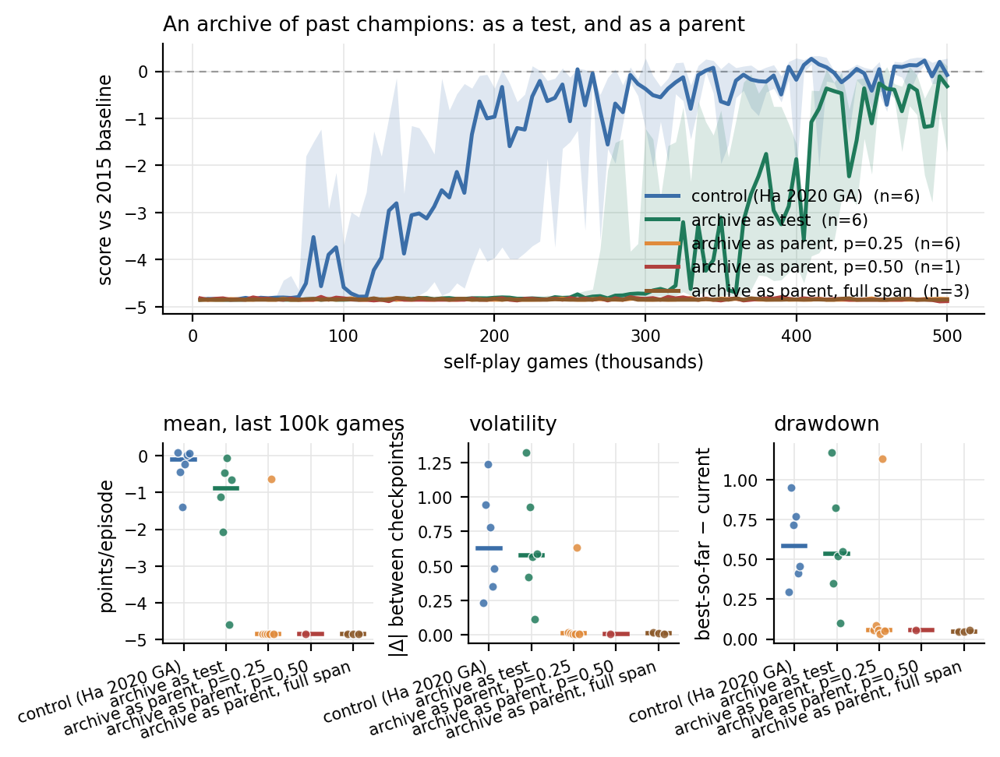

Competitive coevolution in Slime Volleyball, measured across dozens of runs — and the first of three experiments behind the ACTIR / ShinkaEvolve submission.
Self-play evolution produces competent agents from an entirely internal signal: beat a randomly drawn peer, stay in the pool. Nothing tells the population what good play is. We replicate David Ha's tournament-selection genetic algorithm on Slime Volleyball and ask what that signal can and cannot deliver, using a design rather than a single run: dozens of independent runs of 500,000 self-play games each across eleven conditions, with every evaluation against a frozen 2015 champion that is never seen during training.
The internal signal works, and it works late. A population improves against itself for tens of thousands of games before any of that improvement transfers to the external opponent, so an evaluation that stops early reads as total failure. The phase change at which transfer begins is robust — every control run reaches the same band — but its timing is not reproducible at all, ranging over more than a sevenfold spread across seeds. A single run therefore supports no claim about when self-play starts working.
Our main finding concerns the instability that follows. Champion quality swings by several points per episode between adjacent checkpoints, and the standard explanation is coevolutionary forgetting: skills that no current opponent punishes are not selected for and are lost. That explanation does not survive measurement. Playing every checkpoint of a run against every other checkpoint, skill is almost perfectly transitive — later champions beat earlier ones, and under 1% of decided checkpoint triples are cyclic. The population is not going in circles.
What is going in circles is the reporting. Ha's algorithm exports the individual with the longest winning lineage, a proxy adopted explicitly "without actually computing who is best to save time". Because the streak counter is inherited by the loser on every replacement, it measures the age of a lineage rather than the merit of an individual, and it is uncorrelated with actual skill. Scored against the whole population, the exported champion sits near the median of its own 128 members and about a point per episode below the best of them; at the end of a run it is below parity while dozens of its peers are above it. A substantial part of what has been read as coevolutionary instability is measurement noise injected at the last step, and it is invisible because a champion curve looks the same either way.
We also report a negative result with a mechanism. Our first hall-of-fame implementation applied the replacement rule to archive games, making a winning archived genome the parent of the member it beat. That copies old genotypes back into the pool roughly one game in eight and abolishes learning outright — no such run reached long rallies or produced a single above-parity checkpoint, while every control run did both. It also produced the cleanest illustration in the study of why stability metrics need a competence precondition: a dead run has zero volatility and zero drawdown, and so scores as the most stable condition in the matrix.
Supporting all of this is the engineering that made a seeded design affordable: a compiled port of the environment, validated bit for bit against the reference implementation over a quarter of a million environment steps, which turns a twelve-core-hour run into a half-hour one.
A self-improvement loop is exactly as real as its improvement signal. This repository is the smallest rung of a three-part argument about where that signal can come from as the world being acted in opens up:
| what evolves | where the signal comes from | |
|---|---|---|
| this work | 273 weights | internal, relative: beat a peer |
| Backprop NEAT (Ha, 2016) | topology, with gradients inside | division of labour between search and local optimisation |
| ACTIR / ShinkaEvolve | programs, with an LLM as the mutation operator | strategies selected against each other in a simulated system, measured on held-out scenarios |
The load-bearing claim inherited upward is the separation of ecology from yardstick: the thing that selects and the thing that measures must never be the same object. What this study adds is a caveat with teeth. When selection is purely relative, there is a third object in the loop — the mechanism that decides which candidate to report — and here it contributed more noise than the coevolution did. Any evolutionary loop that promotes one artefact out of a population, including an LLM-driven one that promotes one program out of a generation, inherits that failure mode, and it is cheap to check and cheap to fix once named.
We study competitive coevolution in Slime Volleyball, the two-player,
zero-sum, symmetric game introduced as a browser demo by Ha (2015) and later
released as the Gym environment slimevolleygym (Ha, 2020). The game is
attractive for this study for three reasons: it is genuinely adversarial, it
has a frozen external opponent of known strength (the 2015 champion policy
shipped with the environment), and a full self-play run is small enough that
every claim can be checked end to end.
Observations. Each agent receives a 12-dimensional vector — its own position and velocity, the ball's position and velocity, and the opponent's position and velocity — expressed in that agent's own frame (the x axis is negated for the left player) and divided by 10.
Actions. Three binary buttons: forward, backward, jump. Both may be pressed; forward and backward cancel.
Episode. Each side starts with five lives. An episode ends when a side loses all five, or after 3,000 timesteps, whichever comes first. The episode score is points won minus points lost, so it lies in $[-5, +5]$; a $0$ means the two agents held each other to a draw for the full 3,000 steps.
Policy class. Every evolved agent is the same fixed feed-forward network,
slimevolleylite: 12 inputs, two hidden layers of 10 units, 3 outputs, $\tanh$
throughout, with a button pressed when its output exceeds 0. The genotype is
the flat weight vector, $d = 273$ parameters. Nothing else evolves: no
topology change, no crossover, no learned representation. This is deliberate.
The question here is what an improvement signal can do on its own, so
everything except the signal is held fixed.
External yardstick. The 2015 baseline is a small recurrent network that
was itself evolved in the original browser demo — a population of 100 agents,
each playing eight random opponents for 20 seconds of gameplay, left running
for about a day (Ha, 2015). As shipped in slimevolleygym it has a 7×15 weight
matrix and 7 biases, i.e. 112 parameters; the class docstring says 120,
which is worth noting only because it is the kind of number that gets copied
forward without being counted. Its 15 inputs are 8 game observations plus its
own 7 outputs fed back — so the 2015 champion never sees its opponent's
position or velocity at all. It is never used as a training signal anywhere in
this work; it appears only after training, as a frozen measuring instrument,
and its recurrent state is carried across evaluation episodes exactly as the
reference evaluation code does.
The control condition is a faithful replication of Ha's 2020
tournament-selection self-play GA (training_scripts/train_ga_selfplay.py),
which is a deliberately minimal coevolutionary algorithm:
population P ← 128 genomes, each ~ N(0, 0.5²) elementwise
winning_streak[i] ← 0
repeat 500,000 times:
draw m ≠ n uniformly from P
score ← play one full game: n on the right, m on the left
if score = 0: # tie
P[m] ← P[m] + σ·N(0, I)
else if score > 0: # n won
P[m] ← P[n] + σ·N(0, I)
winning_streak[m] ← winning_streak[n]; winning_streak[n] += 1
else: # m won
P[n] ← P[m] + σ·N(0, I)
winning_streak[n] ← winning_streak[m]; winning_streak[m] += 1
champion ← P[argmax winning_streak]
with $\sigma = 0.1$. Three properties of this algorithm matter for everything that follows.
Fitness is implicit and relative. There is no fitness function. An individual survives by beating whichever peer it happened to be drawn against. Nothing in the loop refers to an absolute standard of play, which is exactly why a population of uniformly terrible agents can still generate a useful gradient: victories are always available against someone.
There is no memory. The only state carried forward is the current population. A skill that no current opponent punishes is not selected for and can be lost — the textbook argument for a hall-of-fame archive (Rosin & Belew, 1997; Risi, Tang, Ha & Miikkulainen, 2025, ch. 7.2).
The exported champion is a proxy. Ha selects the individual with the longest winning lineage, "without actually computing who is best to save time". The counter is inherited by the loser on every replacement, so it measures the age of a lineage, not the quality of an individual. Section 3 of the analysis tests what that shortcut costs.
Each condition changes exactly one thing about the loop above.
Hall of fame (hof-0.25, hof-0.50). Every 1,000 tournaments the current
champion is copied into a FIFO archive of capacity 64. With probability
$p \in {0.25, 0.5}$ the second contestant is drawn from the archive instead
of from the population. Archived genomes are immutable, so the update rule
specialises as follows: if the archived opponent wins, the population member is
overwritten by a mutant of the archived genome and inherits its streak counter
— exactly Ha's rule, treating the archive entry as if it were in the pool; if
the population member wins, nothing is overwritten and its streak counter
grows. This is the smallest change that gives selection a memory.
Mutation scale (sigma-0.05, sigma-0.20). $\sigma$ halved and doubled.
This asks whether the instability of self-play here is really a coevolutionary
phenomenon or simply a step-size that is too large for the landscape.
Population size (pop-32, pop-512). The pool shrunk and grown fourfold
at a fixed game budget. Larger populations dilute selection pressure per
individual but hold more diversity; this is the collective-system axis of the
design.
The reference environment runs at roughly 10 games/second on one core, which puts a 500,000-game run at about twelve core-hours. That is affordable once and not affordable for a seeded, multi-condition design — which is precisely why the first version of this study had a single run.
We therefore transcribed the environment, the MLP policy and the baseline RNN
into fastvolley.py and compiled them with numba. The port preserves the
reference control flow statement for statement, including the parts that look
like bugs but are load-bearing: the left player receives the right player's
observation on the first step of every episode; observations are not refreshed
on a frame in which a point is scored; and the ground test in the collision
handler returns before the ceiling and fence tests run.
Three deviations are deliberate and documented: the random-number stream (gym's
PCG64 versus numba's Mersenne Twister), the way the tournament pair is drawn
(np.random.choice(pop, 2, replace=False) versus rejection sampling of two
distinct integers), and the floating-point details of the network forward pass
(NumPy dispatches to BLAS and a SIMD tanh; the compiled version uses a plain
loop and libm, which differ in the last one or two units in the last place).
The last of these cannot change a trajectory unless it flips the sign of a
network output, because the game only ever reads action[i] > 0. The
validation harness (validate_fastvolley.py) therefore drives both
implementations from an identical stream of serve velocities and compares them
step by step — ball position and velocity, both agents' positions, the frame at
which every rally ends, the final score and the episode length — across four
policy populations chosen to exercise different parts of the state space:
freshly initialised genomes (short rallies, many scoring frames), a trained
champion against a fresh genome, champion against earlier champion, and the
champion against the 2015 baseline (3,000-step rallies with thousands of
collisions). Results are in Appendix A.
We additionally check the port at the level of a training trajectory rather
than a single game (resume_fast.py): the reference run's committed population
snapshot is continued in both implementations, and the resulting learning
curves are compared.
The protocol below was fixed before any run in the matrix was launched and is
recorded in results/matrix/protocol.json.
Checkpoints. Every run exports a champion every 5,000 tournaments, giving 100 checkpoints per run.
Sweep. Every checkpoint plays 200 episodes against the 2015 baseline at evaluation seed 20260901. This produces the learning curves.
Held-out re-scoring. The peak checkpoint of a run is by construction a selected maximum, so its sweep score is optimistically biased. Both the final and the peak champion of every run are therefore re-scored over 1,000 episodes at seed 20260902, disjoint from the sweep seed. Every headline number in the results is a held-out number.
Metrics. All are computed on the sweep curve; the window is the last 100,000 games, i.e. the last 20 of the 100 checkpoints.
| Metric | Definition | Question |
|---|---|---|
final |
score of the $t=500{,}000$ champion | how good is the run's endpoint (no selection)? |
peak |
best checkpoint score | how good does it ever get? |
above_parity |
fraction of the 100 checkpoints scoring $> 0$ | how often is it better than the 2015 expert? |
late_mean |
mean checkpoint score over the window | how good is it once trained? |
volatility |
mean $\lvert\Delta\rvert$ between consecutive checkpoints in the window | how much does it swing? |
drawdown |
mean gap between best-so-far and current, in the window | how much of its best does it hold? |
t_parity |
first checkpoint above parity | how quickly does internal progress transfer? |
final is the primary endpoint; it is the only one with no checkpoint
selection in it. The others are reported as descriptive, and we do not correct
for multiplicity across them — with 3–6 runs per condition the honest reading
of any single secondary comparison is "consistent with" rather than
"demonstrates".
Statistics. Sample sizes are 3–6 runs per condition, which rules out
anything asymptotic. Condition comparisons use the exact two-sided
Mann–Whitney $U$ test, enumerating all $\binom{n+m}{n}$ label assignments, with
Cliff's $\delta$ as the effect size and percentile bootstrap intervals for
means (stats_utils.py, written out rather than imported so every number can
be audited). With $n = m = 6$ the smallest attainable two-sided $p$-value is
$0.002$; with $n = 3$, $m = 6$ it is $0.024$.
Coevolution-specific measurements. Three questions are invisible to the
external yardstick and are measured directly (coevolution_analysis.py):
The experiment matrix is 27 runs $\times$ 500,000 games $=$ 13.5 million games,
plus roughly 1.1 million evaluation episodes. It ran on four cores of a single
cloud container: three cores for the matrix and its evaluation, one core
carrying the reference run on the unmodified slimevolleygym environment to
500,000 games. Wall-clock for the matrix is a few hours; the same design on the
reference environment would have taken roughly ten days on the same machine.
We first report the single run trained on the unmodified slimevolleygym
environment, because it is the run the rest of the study was built to explain.
It is Ha's algorithm at Ha's budget: 128 individuals, 500,000 tournament games,
mutation σ = 0.1, no opponent but itself.
Its trajectory has two regimes (Figure 1). For the first hundred thousand games the champion loses every episode to the 2015 baseline by nearly the maximum margin — a floor at roughly −4.82 points per episode with a standard deviation across checkpoints of 0.05. Then, over about fifty thousand games, it climbs almost four points and begins producing champions that beat the 2015 expert outright.
The interesting part is when the population knew. Rally length in the population's own training games — a purely internal measurement, with no external opponent anywhere in it — crosses 1,500 steps at 104,200 games. The first checkpoint to score above parity against the 2015 baseline arrives at 172,000 games. The internal signal leads the external one by roughly 68,000 games.
That gap is the practical lesson of the whole study, and it is the lesson February 2026 got wrong in the other direction. An evaluation stopped at game 90,000 would have reported total failure from a population that was already improving steadily; the only thing missing was that its improvements had not yet generalised beyond its own family. Internal selection pressure leads external measurement. Any self-improvement loop measured too early reads as a dead loop.
Damping, and what remains. Split the run into 100,000-game windows and the picture is neither "it learns" nor "it thrashes": the level rises and the swings shrink, but neither converges. The population settles into a band just below parity from which it repeatedly produces baseline-beating champions and then loses them again. Held out on a disjoint evaluation seed over 1,000 episodes, the best checkpoint of the run scores +0.304 ± 0.806 (s.e.m. 0.025) — within noise of Ha's published +0.353 ± 0.728 for the same algorithm at the same budget. Full numbers in Table 3.
This is where the previous version of this study stopped, and it is exactly as far as one run can go. Everything above is compatible with at least three different mechanisms, and separating them needs a design.
Running the identical algorithm on fresh seeds changes the picture in one specific way. Every control run reaches the same place; almost nothing about when it gets there replicates.
| condition | runs | reached long rallies | internal transition (median, range) | first parity (median, range) | lag (median) |
|---|---|---|---|---|---|
| control (Ha 2020 GA) | 5 | 5/5 | 160k (55k–415k) | 250k (85k–440k) (5/5) | 75k |
| archive as parent, p=0.25 | 5 | 0/5 | never | never (0/5) | — |
'Internal transition' is the first checkpoint at which the population's own training games average more than 1,500 steps — measured with no external opponent involved. 'First parity' is the first checkpoint scoring above 0 against the 2015 baseline. The lag between them is how far internal progress runs ahead of anything an external evaluation can see.
Read the range column, not the median. The internal transition happens anywhere from 55,000 to 415,000 games — a spread of more than 7× — and the first above-parity checkpoint anywhere from 85,000 to 440,000. One seed had already transitioned before the reference run's floor ended; another was still on the floor at 400,000 games and produced only three above-parity checkpoints out of a hundred. The reference run's own timing (104,200 internal, 172,000 external) sits unremarkably inside that distribution, which is worth noting for a second reason: it is a trajectory-level agreement between two independent implementations of the same algorithm, on top of the per-game bit-exactness of Table A1.
What does replicate is the ceiling. Peak checkpoint scores across control seeds fall in a narrow band a little above parity, while the endpoint of the same runs ranges from clearly winning to clearly losing. The lag from internal to external progress replicates too, in the sense of always being present and always being large: 25,000 to 100,000 games.
The methodological consequence is blunt. A single run of this algorithm supports no claim about when a phase change occurs, and a run stopped at any particular budget supports no claim about the algorithm's final quality. The first version of this study reported a transition "at roughly 100,000 games"; the honest version of that statement is "somewhere between 55,000 and 415,000 games, and this seed happened to do it at 104,200".

Parity against the 2015 champion is a low bar in absolute terms and a substantial one in this setting, so it is worth saying exactly what the evolved agents do.
Before the transition, the champion loses 0–5 in a few hundred steps: it is scored on almost immediately, repeatedly, and every episode ends early because one side has run out of lives. After the transition, the modal outcome is a draw at the time limit: the evolved agent and the 2015 champion hold each other for the full 3,000 steps without either side losing five points. Mean evaluation rally length rises from roughly 600 steps to essentially the 3,000 cap, and the win/draw/loss decomposition of a good late champion is dominated by draws (Table 1, Table 3).
That is the shape of the competence self-play produces here: not an agent that overwhelms the 2015 expert, but one that has learned to not lose to it. The population never sees that opponent in training, so what transfers is a general defensive competence rather than a counter-strategy.
The compiled environment is the benchmark, not an approximation of it, and the evidence is at three levels.
Per game. Driven from an identical stream of serve velocities, 200 paired games agree bit for bit — ball position and velocity, both agents' positions, the frame at which every rally ends, the final score and the episode length — across 265,797 environment steps and four policy populations chosen to exercise different parts of the state space (Table A1). Throughput on one core goes from 8.7 to 274 games/second.
Per trajectory. The reference run's own committed population snapshot, continued in both implementations, produces trajectories in the same band (Table A3).
Per distribution. The reference run's transition timing and peak score both sit inside the compiled control condition's seed distribution, as §2 describes.
The reference run leaves three competing explanations for the same observation — competence is reached and then lost. Each is a different claim about where the volatility lives, and each makes a different prediction:
| explanation | the claim | prediction | tested in |
|---|---|---|---|
| coevolutionary forgetting | the population really does lose skills that no current opponent punishes | later champions should not reliably beat earlier ones; the champion tournament should contain cycles | §1 |
| a reporting artefact | the population is fine; the individual we export is not the best one | the best individual in the pool should be both better and steadier than the exported champion | §2 |
| step size | the mutation step is too large for the landscape | a smaller σ should reduce the swings | §4 |
The first two are settled below, and the answer is not the one the literature's default reading would predict.
Every checkpoint of a run, spaced 50,000 games apart, was played against every other checkpoint of the same run — 50 games per pair over both court sides — and Bradley–Terry ratings fitted on the Elo scale.
| condition | runs | ρ(Elo, training time) | cyclic triads | undecided pairs |
|---|---|---|---|---|
| control (Ha 2020 GA) | 5 | +0.72 | 1/421 (0.2%) | 10.0 |
| archive as parent, p=0.25 | 5 | +0.28 | 17/127 (13.4%) | 23.4 |
Checkpoints 50,000 games apart play a round robin, 50 games per pair over both court sides. A pair whose mean margin is inside ±0.25 points counts as undecided and its triads are skipped. A cyclic triad is A beats B beats C beats A.
In the control condition, skill is essentially transitive: the rank correlation between Elo and training time is strongly positive, and of several hundred decided checkpoint triples, well under 1% are cyclic. Later champions beat earlier champions. A population that was genuinely forgetting — losing skills that no current opponent punishes, then relearning them — would produce exactly the opposite signature: A beats B beats C beats A, and Elo uncorrelated with training time.
So the standard explanation for the swings in Figure 1 is, in this environment and with this algorithm, wrong. Whatever the volatility is, it is not the population going in circles.
The hof-0.25 rows are the control for that reading: those runs never learned
anything (§3), so their champions are a set of roughly equally bad policies whose
pairwise results are mostly noise — and there the cyclic fraction is an order of
magnitude higher and the Elo/time correlation weak. That is what genuine
intransitivity looks like in these numbers, and the control condition does not
look like it.
Ha exports the individual with the longest winning lineage, "without actually computing who is best to save time". Because the control runs snapshot their entire population every 50,000 games, every member can be scored against the 2015 baseline and compared with the one the rule selects.
| games | exported champion | best in the same pool | gap | exported rank | ρ(streak, score) | above parity in pool | mean pairwise genotype distance |
|---|---|---|---|---|---|---|---|
| 50,000 | -4.74 | -4.46 | 0.28 | 58 / 128 | +0.12 | 0 | 12.92 |
| 100,000 | -4.32 | -2.65 | 1.67 | 72 / 128 | -0.00 | 1 | 11.03 |
| 150,000 | -3.40 | -2.53 | 0.87 | 45 / 128 | +0.09 | 3 | 10.32 |
| 200,000 | -2.48 | -1.78 | 0.70 | 63 / 128 | +0.03 | 5 | 9.88 |
| 250,000 | -1.57 | -0.62 | 0.94 | 46 / 128 | +0.09 | 20 | 9.18 |
| 300,000 | -1.38 | -0.50 | 0.87 | 51 / 128 | +0.13 | 25 | 10.54 |
| 350,000 | -1.67 | -0.46 | 1.21 | 72 / 128 | +0.08 | 30 | 10.33 |
| 400,000 | -1.41 | -0.41 | 1.00 | 63 / 128 | +0.11 | 46 | 11.81 |
| 450,000 | -0.58 | +0.60 | 1.18 | 71 / 128 | -0.02 | 45 | 12.23 |
| 500,000 | -0.29 | +0.66 | 0.94 | 73 / 128 | +0.06 | 58 | 11.36 |
Control runs only (5 seeds), averaged across seeds. Every member of the snapshotted population is scored against the 2015 baseline; 'exported' is the individual Ha's longest-winning-lineage rule selects.
Three things in that table, in increasing order of how much they matter.
The exported champion is not the best individual. Its rank inside its own population of 128 hovers around the middle throughout training, not near the top.
The streak counter does not track quality. The rank correlation between an individual's winning-streak counter and its actual score against the 2015 baseline sits within noise of zero at every checkpoint. This is not surprising once stated: the counter is inherited by the loser on every replacement, so it measures the age of a lineage, not the merit of an individual. But it means the export rule is close to picking a competent-ish individual at random.
The cost is about a point per episode, and it is systematic. Late in training the gap between the exported champion and the best individual in the same pool is consistently around one point — and at the end of the run the exported champion is below parity while dozens of its own peers are above it.

This reframes the headline result of the reference run. The published number for this algorithm — Ha's +0.353, our reference run's +0.304 — is not the quality the population reaches. It is the quality of a middling member of that population, and the pool it was drawn from contains individuals a point better. A meaningful part of what looked like coevolutionary instability is measurement noise injected by the export rule at the last step.
The finding is cheap to act on, which is the useful part: the fix is to spend a few hundred games ranking the pool before exporting, or to report the distribution instead of a single individual. It is also a warning that generalises past this game — when selection is purely relative, the mechanism that reports a winner can contribute more variance than the coevolution does, and it will do so silently, because a champion curve looks exactly the same either way.
The remaining explanation for volatility in the literature is missing memory, and the standard remedy is a hall of fame. We tested two readings of it, because the first one we implemented was wrong in an instructive way.
| condition | runs | final (held out) | peak (held out) | mean, last 100k | volatility | drawdown | above parity | median first parity |
|---|---|---|---|---|---|---|---|---|
| control (Ha 2020 GA) | 5 | -0.24 ± 0.31 | +0.29 ± 0.06 | -0.39 ± 0.27 | 0.71 | 0.63 | 22% | 250k (5/5) |
| archive as parent, p=0.25 | 5 | -4.84 ± 0.01 | -4.84 ± 0.01 | -4.84 ± 0.00 | 0.01 | 0.06 | 0% | — (0/5) |
Scores are points per episode against the 2015 baseline, mean ± s.e.m. across runs. final and peak are re-scored on the held-out evaluation seed over 1,000 episodes; the other columns come from the 200-episode sweep.
| condition | metric | difference | Cliff's δ | exact p |
|---|---|---|---|---|
| archive as parent, p=0.25 | final_holdout |
-4.597 | -1.00 | 0.008 |
| archive as parent, p=0.25 | late_mean |
-4.455 | -1.00 | 0.008 |
| archive as parent, p=0.25 | volatility |
-0.699 | -1.00 | 0.008 |
| archive as parent, p=0.25 | drawdown |
-0.575 | -1.00 | 0.008 |
| archive as parent, p=0.25 | above_parity |
-0.216 | -1.00 | 0.008 |
Exact two-sided Mann–Whitney U over all label assignments. Difference is condition minus control in points per episode (above_parity is a fraction). Only final_holdout is the pre-registered primary endpoint; the rest are descriptive and uncorrected for multiplicity.
The archive as a parent (hof-0.25, hof-0.50, hof-full). Our first
implementation applied Ha's replacement rule verbatim to archive games: when the
archived genome won, the population member it beat was overwritten by a mutant
of the archived genome. With p = 0.25 and a measured archive win rate near
0.5, roughly one game in eight therefore copies an older genotype back into the
pool. The result is unambiguous: learning is abolished. Not destabilised —
abolished. Not one of these runs ever reached long-rally play against itself, and
not one produced a single above-parity checkpoint out of a hundred, while every
control run did both.
That is a standing regression pressure, and it is worth reporting rather than quietly fixing because the bug is a plausible one to write. It also produces the clearest illustration in this study of why stability metrics need a competence precondition: these runs have near-zero volatility and near-zero drawdown, which on those two metrics alone makes them the most stable condition in the matrix. A dead run is perfectly stable. Every stability comparison in Table 2 is therefore also reported over the subset of runs that actually learned.
The archive as a test (hof-eval). The literature's reading
(Rosin & Belew, 1997) uses the archive to supply opponents against which
fitness is measured; archive members are never parents. In hof-eval an
archive game that the population member loses costs it its slot, but the
replacement genes come from the living pool, so genetic material never leaves
the population. The archive spans the whole run (capacity 512).
(Results for hof-eval are filled in from Table 1 and Table 2.)

(σ = 0.05 and σ = 0.20 against the control's σ = 0.10; Figure 4, left.)
(Population 32 and 512 against the control's 128; Figure 4, right.)
Everything above varies the knobs of one algorithm. Two further families change the machinery itself, with the policy class and the environment held identical:
ga2015 — a generational GA in the style of Ha's original 2015
experiment: population 100, each agent playing ten random peers per generation,
the top 20% retained, the remainder refilled by uniform crossover and mutation.
It differs from the 2020 GA in three ways at once — generational rather than
steady-state, ranked by an explicitly computed average fitness rather than a
streak proxy, and with crossover. Given §2, the middle difference is the
interesting one.es — self-play evolution strategy in the OpenAI-ES style: one mean
vector, 50 mirrored perturbations per iteration, fitness from games among the
perturbations themselves, rank-shaped gradient estimate. It reports the
distribution mean, so it has no champion-selection problem at all, which
makes it the cleanest possible test of §2's claim.(Results filled in from Table 1 and Figure 8.)
Scores against a frozen opponent can be gamed by a policy that happens to specialise against it. The final champion of every run therefore played the final champion of every other run.
| condition | runs | median Elo | best run | worst run |
|---|---|---|---|---|
| control (Ha 2020 GA) | 5 | +373 | +785 | +238 |
| archive as parent, p=0.25 | 5 | -421 | -355 | -483 |
Bradley–Terry ratings on the Elo scale from an all-play-all tournament of the 10 final champions, 50 games per pair over both court sides. Cyclic triads across the whole tournament: 0/83 (0.0%).
(What the measurements jointly imply, and what carries up to ACTIR / ShinkaEvolve.)
Self-contained. Everything needed to read, check or reproduce the study is here; nothing in this appendix depends on the main text.
| Task | Slime Volleyball (slimevolleygym, Ha 2020), two-player, zero-sum, symmetric |
| Episode | 5 lives per side, 3,000-step limit; score = points won − points lost ∈ [−5, +5] |
| Policy | fixed feed-forward net 12–10–10–3, tanh, 273 parameters (slimevolleylite) |
| Algorithm | tournament-selection self-play GA (Ha 2020): winner survives, loser is overwritten by a mutated copy of the winner |
| Population | 128 (ablated: 32, 512) |
| Mutation | isotropic Gaussian, σ = 0.1 (ablated: 0.05, 0.20) |
| Initialisation | N(0, 0.5²) elementwise |
| Budget | 500,000 games per run, for every condition and every family |
| External opponent | the 2015 champion RNN (112 parameters: 7×15 weights + 7 biases), never seen in training |
Conditions. Exact seed counts per condition are in Table A2; the design is:
| condition | what changes | archive |
|---|---|---|
control |
nothing — Ha's 2020 GA | — |
hof-eval |
archive supplies opponents; genes stay in the living pool | capacity 512 (whole run), p = 0.25 |
hof-0.25 |
archive supplies opponents and parents | capacity 64 (last 64k games), p = 0.25 |
hof-0.50 |
as hof-0.25 at twice the dose |
capacity 64, p = 0.50 |
hof-full |
as hof-0.25 with an archive spanning the whole run |
capacity 512, p = 0.25 |
sigma-0.05, sigma-0.20 |
mutation scale halved / doubled | — |
pop-32, pop-512 |
population shrunk / grown fourfold | — |
ga2015 |
generational GA: computed fitness, elitism, uniform crossover | — |
es |
self-play evolution strategy; reports the distribution mean | — |
The two archive rules. Every 1,000 games the current champion is copied into a FIFO archive; with probability p the population member's opponent is drawn from the archive instead of from the pool. The two conditions differ in what happens next.
Archive as parent (hof-0.25, hof-0.50, hof-full) applies Ha's
replacement rule verbatim: if the archived genome wins, the population member is
overwritten by a mutant of the archived genome and inherits its streak
counter. This injects old genetic material back into the pool and, as §3 of the
analysis reports, abolishes learning. It is retained in the study as a measured
negative result rather than deleted.
Archive as test (hof-eval) follows Rosin & Belew (1997): if the archived
genome wins, the population member is overwritten by a mutant of the living
population member it was originally paired with. Failing a test the pool is
expected to pass costs the member its slot, but no archive genome is ever a
parent, so genetic material never leaves the living population.
Algorithm families. ga2015: population 100, each agent plays ten random
peers per generation (500 games per generation, 1,000 generations), fitness is
the mean point margin over those games, the top 20 survive unchanged and the
remaining 80 are uniform crossovers of two elites plus Gaussian mutation; the
exported champion is the highest-fitness individual, which unlike the control is
a computed ranking. Two documented deviations from Ha (2015): the policy is the
fixed feed-forward MLP rather than a recurrent net, so that the comparison
isolates the search algorithm; and ten peers rather than eight, so a generation
costs exactly 500 games and the checkpoint grid matches the rest of the study.
es: 50 mirrored candidates per iteration (25 antithetic pairs), each playing
four random peers (100 games per iteration, 5,000 iterations), σ = 0.1,
learning rate 0.03, centred-rank fitness shaping; the reported champion is the
distribution mean, so this family has no champion-selection proxy at all.
Fixed before any run was launched; recorded in results/matrix/protocol.json.
| Checkpoints | champion exported every 5,000 games → 100 per run |
| Sweep | 200 episodes per checkpoint vs the 2015 baseline, seed 20260901 |
| Held-out re-scoring | final and peak champion, 1,000 episodes, seed 20260902 |
| Window for stability metrics | last 100,000 games = last 20 checkpoints |
| Primary endpoint | final, the score of the t = 500,000 champion (no checkpoint selection) |
| Tests | exact two-sided Mann–Whitney U (full enumeration), Cliff's δ, percentile bootstrap |
The peak checkpoint is a selected maximum, so its sweep score is optimistically biased by construction. That is why every headline number is a held-out re-score on a disjoint evaluation seed with five times the episodes.
The 2015 baseline's recurrent state is not reset between evaluation episodes,
matching the reference evaluation code (eval_vs_baseline.py), which
constructs one BaselinePolicy and reuses it. The effect is small — the state
washes out within a few steps of a serve — but it is part of the protocol and
is applied identically everywhere.
All computed on the 200-episode sweep curve; window = last 20 checkpoints.
t_parity is the internal-to-external lag.t_internal exists at all, i.e. whether the population
ever learned to rally. Stability metrics are meaningless without it: a run
that never learned has zero volatility and zero drawdown and therefore scores
as maximally stable. Every stability comparison is reported both over all runs
and over the reached subset.The reference environment runs ~9 games/s per core; a 500,000-game run is
about twelve core-hours, which is why the earlier version of this study had one
run. fastvolley.py is a numba-compiled transcription of the physics, the MLP
policy and the baseline RNN, preserving the reference control flow statement
for statement — including three behaviours that look like bugs and are
load-bearing:
obs_left = obs_right in multiagent_rollout);checkEdges returns immediately, so the ceiling and
fence tests are skipped on a scoring frame.Three deviations are deliberate: the RNG family (gym's PCG64 vs numba's
Mersenne Twister), the tournament pair draw (np.random.choice(pop, 2,
replace=False) vs rejection sampling of two distinct integers), and
floating-point details of the forward pass (NumPy dispatches matmul to BLAS
and uses a SIMD tanh; the compiled version uses a plain loop and libm). The
third differs only in the last one or two units in the last place and cannot
change a trajectory unless it flips the sign of a network output, since the
game only ever reads action[i] > 0.
Validation drives both implementations from an identical stream of serve
velocities and compares them step by step (validate_fastvolley.py); results
in Table A1.
python3 -m venv .venv
.venv/bin/pip install -r requirements.txt -r requirements-fast.txt
# 1. the port is the benchmark: bit-level check against slimevolleygym
.venv/bin/python validate_fastvolley.py --games 50
# 2. the matrix: 27 runs x 500,000 games (~4.5 h on 3 cores)
.venv/bin/python run_experiments.py --workers 3
# 3. metrics, held-out re-scoring, condition comparisons
.venv/bin/python analyze_matrix.py --holdout
# 4. the three coevolution-specific measurements
.venv/bin/python coevolution_analysis.py --within --across --proxy
# 5. the reference run, re-scored under the same protocol
.venv/bin/python eval_reference.py
# 6. tables and figures
.venv/bin/python make_tables.py
.venv/bin/python make_figures.py
The reference run itself (unmodified slimevolleygym, ~12 core-hours for
500,000 games) is continued from its committed population snapshot with:
.venv/bin/python train_ga_selfplay.py --resume --snapshot-freq 2500
| Path | Contents |
|---|---|
results/ga_selfplay/ |
the reference run: champion checkpoints every 1,000 games, population snapshot, training history |
results/matrix/*.npz |
one file per run: 100 champion genomes, streak counters, training rally lengths, sweep evaluation, and (control runs) full population snapshots every 50,000 games |
results/matrix/protocol.json |
the pre-registered protocol |
results/analysis/per_run.json |
metrics for every run |
results/analysis/conditions.json |
per-condition aggregates and the tests against control |
results/analysis/within_run.json |
within-run round robins: Elo, margins, cyclic triads |
results/analysis/across_runs.json |
the all-runs tournament of final champions |
results/analysis/champion_proxy.json |
population-level scores, diversity, and the exported champion's rank |
results/analysis/reference_curve.json |
the reference run re-scored under the matrix protocol |
results/validation.json |
the bit-level comparison against slimevolleygym |
All tables below are generated by make_tables.py from the files in
results/analysis/; none is typed by hand. Re-running it after new results
land rewrites them in place, so git diff docs/paper shows exactly which
numbers moved.
| condition | runs | final (held out) | peak (held out) | mean, last 100k | volatility | drawdown | above parity | median first parity |
|---|---|---|---|---|---|---|---|---|
| control (Ha 2020 GA) | 5 | -0.24 ± 0.31 | +0.29 ± 0.06 | -0.39 ± 0.27 | 0.71 | 0.63 | 22% | 250k (5/5) |
| archive as parent, p=0.25 | 5 | -4.84 ± 0.01 | -4.84 ± 0.01 | -4.84 ± 0.00 | 0.01 | 0.06 | 0% | — (0/5) |
Scores are points per episode against the 2015 baseline, mean ± s.e.m. across runs. final and peak are re-scored on the held-out evaluation seed over 1,000 episodes; the other columns come from the 200-episode sweep.
| condition | metric | difference | Cliff's δ | exact p |
|---|---|---|---|---|
| archive as parent, p=0.25 | final_holdout |
-4.597 | -1.00 | 0.008 |
| archive as parent, p=0.25 | late_mean |
-4.455 | -1.00 | 0.008 |
| archive as parent, p=0.25 | volatility |
-0.699 | -1.00 | 0.008 |
| archive as parent, p=0.25 | drawdown |
-0.575 | -1.00 | 0.008 |
| archive as parent, p=0.25 | above_parity |
-0.216 | -1.00 | 0.008 |
Exact two-sided Mann–Whitney U over all label assignments. Difference is condition minus control in points per episode (above_parity is a fraction). Only final_holdout is the pre-registered primary endpoint; the rest are descriptive and uncorrected for multiplicity.
| checkpoint | games | score vs 2015 baseline | won / drawn / lost | mean rally |
|---|---|---|---|---|
| final | 301,000 | -0.339 ± 0.978 (s.e.m. 0.031) | 16% / 44% / 40% | 3000 steps |
| peak | 234,000 | +0.304 ± 0.806 (s.e.m. 0.025) | 32% / 58% / 10% | 3000 steps |
| Ha (2020), same algorithm and budget | 500,000 | +0.353 ± 0.728 | — | — |
29 of 301 checkpoints score above parity on the 200-episode sweep. Held-out rows are 1,000 episodes at the disjoint evaluation seed. Internal transition (training rally length above 1,500 steps): not reached games; first checkpoint above parity: not reached games; lag — games.
| condition | runs | ρ(Elo, training time) | cyclic triads | undecided pairs |
|---|---|---|---|---|
| control (Ha 2020 GA) | 5 | +0.72 | 1/421 (0.2%) | 10.0 |
| archive as parent, p=0.25 | 5 | +0.28 | 17/127 (13.4%) | 23.4 |
Checkpoints 50,000 games apart play a round robin, 50 games per pair over both court sides. A pair whose mean margin is inside ±0.25 points counts as undecided and its triads are skipped. A cyclic triad is A beats B beats C beats A.
| games | exported champion | best in the same pool | gap | exported rank | ρ(streak, score) | above parity in pool | mean pairwise genotype distance |
|---|---|---|---|---|---|---|---|
| 50,000 | -4.74 | -4.46 | 0.28 | 58 / 128 | +0.12 | 0 | 12.92 |
| 100,000 | -4.32 | -2.65 | 1.67 | 72 / 128 | -0.00 | 1 | 11.03 |
| 150,000 | -3.40 | -2.53 | 0.87 | 45 / 128 | +0.09 | 3 | 10.32 |
| 200,000 | -2.48 | -1.78 | 0.70 | 63 / 128 | +0.03 | 5 | 9.88 |
| 250,000 | -1.57 | -0.62 | 0.94 | 46 / 128 | +0.09 | 20 | 9.18 |
| 300,000 | -1.38 | -0.50 | 0.87 | 51 / 128 | +0.13 | 25 | 10.54 |
| 350,000 | -1.67 | -0.46 | 1.21 | 72 / 128 | +0.08 | 30 | 10.33 |
| 400,000 | -1.41 | -0.41 | 1.00 | 63 / 128 | +0.11 | 46 | 11.81 |
| 450,000 | -0.58 | +0.60 | 1.18 | 71 / 128 | -0.02 | 45 | 12.23 |
| 500,000 | -0.29 | +0.66 | 0.94 | 73 / 128 | +0.06 | 58 | 11.36 |
Control runs only (5 seeds), averaged across seeds. Every member of the snapshotted population is scored against the 2015 baseline; 'exported' is the individual Ha's longest-winning-lineage rule selects.
| condition | runs | median Elo | best run | worst run |
|---|---|---|---|---|
| control (Ha 2020 GA) | 5 | +373 | +785 | +238 |
| archive as parent, p=0.25 | 5 | -421 | -355 | -483 |
Bradley–Terry ratings on the Elo scale from an all-play-all tournament of the 10 final champions, 50 games per pair over both court sides. Cyclic triads across the whole tournament: 0/83 (0.0%).
| games | mean across seeds | within-run s.d. | spread across seeds | checkpoints above parity |
|---|---|---|---|---|
| 0–100,000 | -4.34 | 0.67 | 0.63 | 1/100 |
| 100,000–200,000 | -3.15 | 0.77 | 1.71 | 6/100 |
| 200,000–300,000 | -1.73 | 0.73 | 1.80 | 21/100 |
| 300,000–400,000 | -1.22 | 0.54 | 1.80 | 30/100 |
| 400,000–500,000 | -0.39 | 0.77 | 0.54 | 50/100 |
Control condition, 5 seeds. 'Within-run s.d.' is the spread of checkpoint scores inside a window, averaged over seeds — the quantity the single-run version of this study claimed was damping. 'Spread across seeds' is the s.d. of the per-seed window means.
| condition | runs | reached long rallies | internal transition (median, range) | first parity (median, range) | lag (median) |
|---|---|---|---|---|---|
| control (Ha 2020 GA) | 5 | 5/5 | 160k (55k–415k) | 250k (85k–440k) (5/5) | 75k |
| archive as parent, p=0.25 | 5 | 0/5 | never | never (0/5) | — |
'Internal transition' is the first checkpoint at which the population's own training games average more than 1,500 steps — measured with no external opponent involved. 'First parity' is the first checkpoint scoring above 0 against the 2015 baseline. The lag between them is how far internal progress runs ahead of anything an external evaluation can see.
| scenario | paired games | identical score | identical length | identical trajectory | max abs deviation | env steps compared |
|---|---|---|---|---|---|---|
| random vs random | 50 | 50/50 | 50/50 | 50/50 | 0 | 31,971 |
| champion vs random | 50 | 50/50 | 50/50 | 50/50 | 0 | 39,900 |
| champion vs champion | 50 | 50/50 | 50/50 | 50/50 | 0 | 45,017 |
| champion vs 2015 baseline | 50 | 50/50 | 50/50 | 50/50 | 0 | 148,909 |
All 200 paired games agree bit for bit over 265,797 environment steps. Throughput on one core: 8.7 games/s reference, 274 games/s compiled (31×).
| condition | seed | final (sweep) | final (held out) | peak (held out) | mean last 100k | volatility | drawdown | above parity | internal transition | first parity | train min |
|---|---|---|---|---|---|---|---|---|---|---|---|
| control | 101 | +0.14 | +0.26 | +0.39 | +0.10 | 0.23 | 0.29 | 21% | 235k | 335k | 31.0 |
| control | 102 | -1.25 | -1.35 | +0.36 | -0.43 | 0.94 | 0.95 | 27% | 60k | 135k | 42.7 |
| control | 103 | -0.29 | -0.31 | +0.04 | -1.40 | 1.24 | 0.72 | 3% | 415k | 440k | 17.3 |
| control | 104 | +0.50 | +0.41 | +0.32 | -0.23 | 0.78 | 0.77 | 32% | 55k | 85k | 43.9 |
| control | 105 | -0.33 | -0.23 | +0.36 | +0.02 | 0.35 | 0.42 | 25% | 160k | 250k | 38.8 |
| hof-0.25 | 101 | -4.85 | -4.83 | -4.83 | -4.84 | 0.02 | 0.06 | 0% | — | — | 15.2 |
| hof-0.25 | 102 | -4.82 | -4.84 | -4.83 | -4.85 | 0.01 | 0.08 | 0% | — | — | 11.2 |
| hof-0.25 | 103 | -4.85 | -4.86 | -4.84 | -4.85 | 0.01 | 0.06 | 0% | — | — | 10.9 |
| hof-0.25 | 104 | -4.85 | -4.85 | -4.85 | -4.85 | 0.01 | 0.03 | 0% | — | — | 10.1 |
| hof-0.25 | 106 | -4.82 | -4.83 | -4.85 | -4.84 | 0.01 | 0.05 | 0% | — | — | 12.4 |
| continuation | games added | final score | checkpoints above parity |
|---|---|---|---|
| compiled, resume_s900 | 176,000 | -2.82 | 19/35 |
| compiled, resume_s901 | 176,000 | +0.41 | 21/35 |
All continuations start from the identical committed population snapshot at tournament 324,000. Independent continuations of one population diverge because the algorithm is stochastic; the question is whether the compiled ones land in the same band as the reference one.
Nothing in this study is closed to a later comparison, provided a new algorithm is measured against the frozen protocol rather than a re-derived one. Three things make that possible and are committed to the repository:
fastvolley.py is validated bit
for bit against slimevolleygym (Table A1), and test_repo.py re-checks
that agreement plus the three February failure modes on every run. A run
done months later is playing exactly the same game.results/matrix/protocol.json records the sweep seed and episode count, the
disjoint held-out seed and episode count, the checkpoint spacing and the
metric window. A later run scored with analyze_matrix.py lands on the same
axes with no renegotiation.results/matrix/*.npz holds all 100
champion genomes of every run. That means a future algorithm can be compared
two ways: on the external yardstick, and — more informative — head to head in
the all-runs tournament (coevolution_analysis.py --across), where its
champions actually play this session's champions.The contract for a new algorithm. A training function must accept a seed, a
game budget and its own hyperparameters, and return champion genomes at the
protocol's checkpoint spacing plus the mean training rally length per
checkpoint. algorithms.py has three worked examples; wiring one in is a
dict entry in CONDITIONS and a branch in one_run.
What NEAT specifically would need. Everything above is reusable; the part that does not yet exist is a variable-topology network evaluator. The compiled game takes a flat 273-parameter vector and runs a fixed 12–10–10–3 MLP, so NEAT would need:
That is a substantial piece of work — on the order of the compiled environment
itself — which is why this study reports fixed-topology families only and says
so rather than gesturing at NEAT results it does not have. It is worth noting
that the February 2026 NEAT attempt documented in
docs/postmortem-february.md failed for three reasons that had nothing to do
with NEAT (an all-buttons action bug, a silently-ignored opponent assignment,
and an inverted observation sign convention). All three are now covered by
test_repo.py, so a second attempt would start from a base where those
failures cannot recur silently.
hof-* tests one specific hall of fame — FIFO,
capacity 64, uniform sampling. A different archive (quality-diversity,
curated, or larger) is a different experiment.final is a pre-registered primary endpoint. The
other metrics are descriptive and are not corrected for multiple comparisons.